公司新闻
Company news
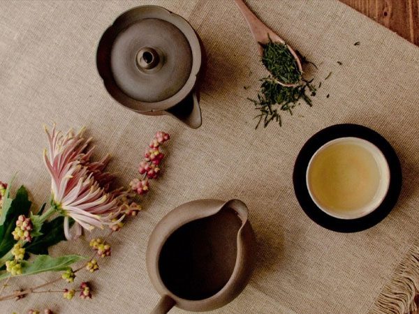
白茶，是中国茶里的极简主义
提起茶叶，总会想到各种制作工艺带来的复杂风味，绿茶要杀青，红茶要发酵，普洱茶也要陈化之后才能入口……
2017-06-18
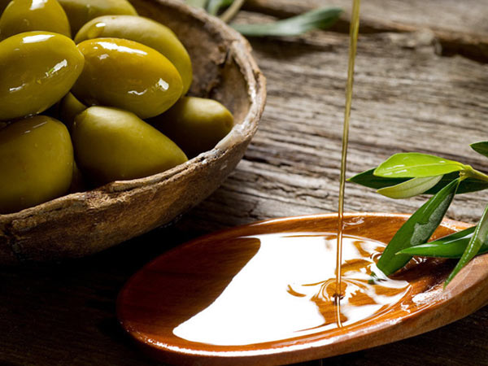
意大利、西班牙、希腊的橄榄油，到底有什么不同？
本着科普到底的责任心，这次决定，从种树到榨油，再从产区到搭配，一次性把最实用的橄榄油干货向你发射完毕!
2017-06-18
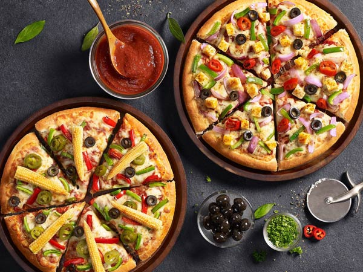
这块菠萝披萨名叫“夏威夷”，却诞生于加拿大
你没听过他的名字，但很有可能吃过他发明的一道菜——柔韧面饼铺满芝士，排上罐头菠萝，再缀以几片咸香火腿，看起来是黑暗料理，但吃起来……就跟菠萝咕咾肉相似，酸甜与咸香碰撞，有种奇妙的化学反应
2017-06-18
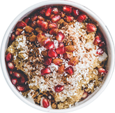
我们的深夜食堂，供应天南地北的夜宵、故事和脂肪
深夜十二点开门，菜单只有九道，这是企鹅编辑部为你而设的深夜食堂。你问有没有客人会来?客人还挺多的，天南海北都有
2017-06-18
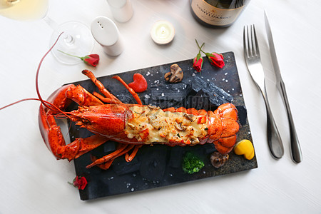 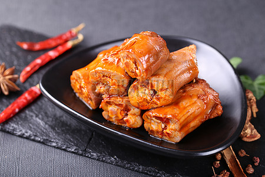 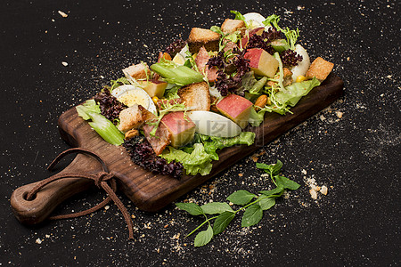 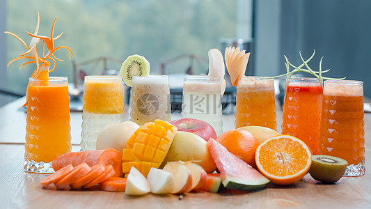 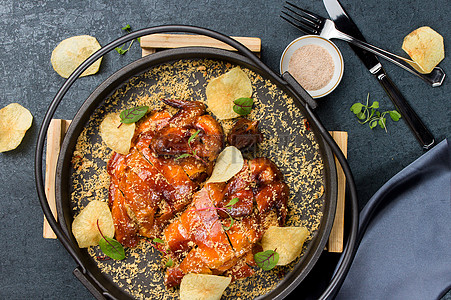 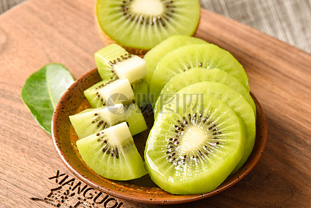 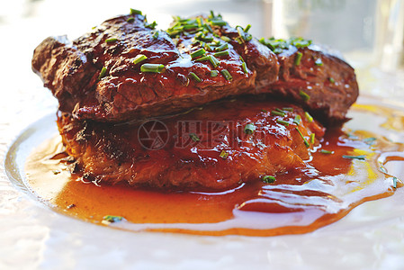 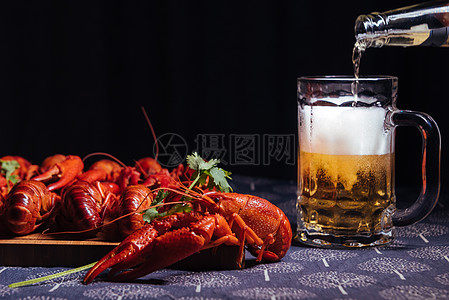 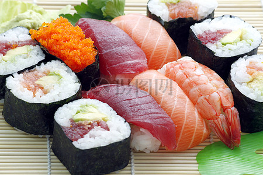 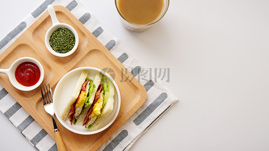 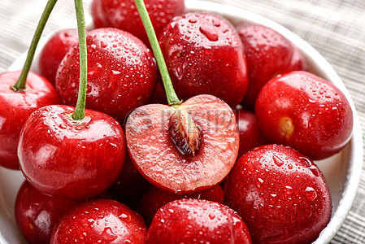 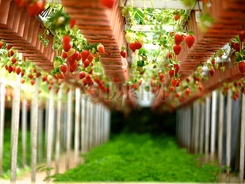 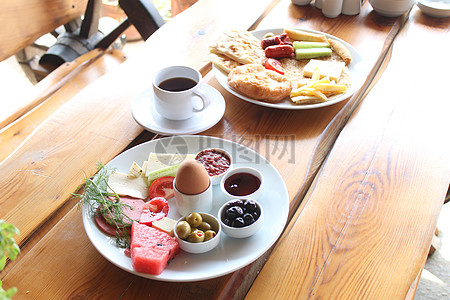 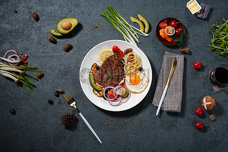 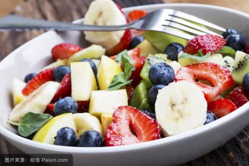 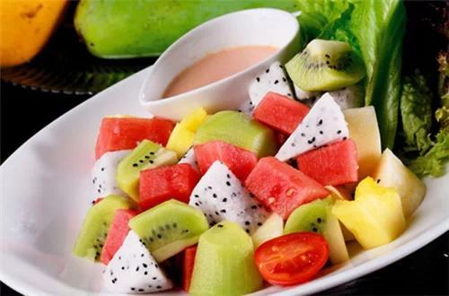